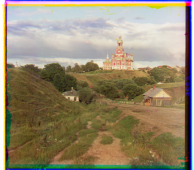
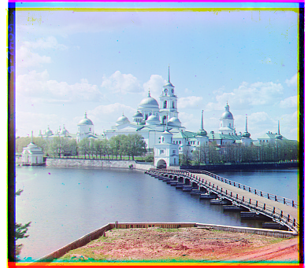
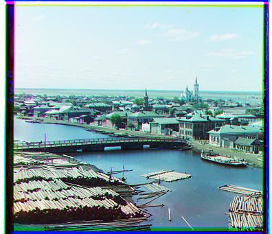
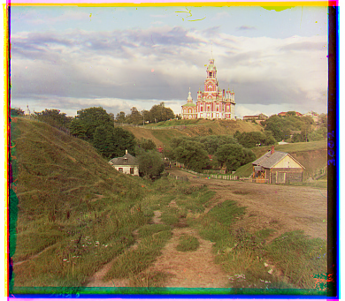
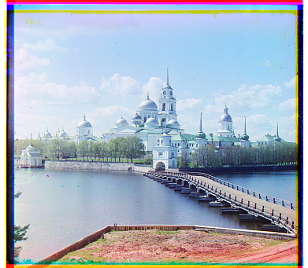
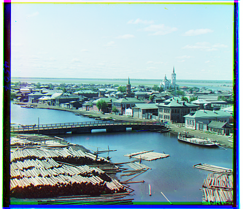

Project 1: Colorizing the Prokudin-Gorskii Photo Collection
The reconstruction of Sergei Prokudin-Gorskii's early 20th-century color photographs.
Date: Sep 2025
Project Overview
This project explores early computational photography technique through the work of Sergei Prokudin-Gorskii,
who captured scenes of the Russian Empire on glass plates using three separate color filters (blue, green, red).
The task is to take these digitized plates, split them into the three color channles, and then realign them such that they form a signle color photographs.
I started with a simple exhaustive search over small displacements, using normazlied cross-correlation (NCC) to score alignments.
Because the full-resolution .tif scans are very large, I extended the approach with an image pyramid:
the scans were recursively downsampled and aligned to estimate shifts efficiently.
This allowed efficient and accurate reconstructions even for high-resolution plates.
To further improve alignment, I also experimented with Sobel edge detection, which uses structural boundaries in the image while reducing sensitivity to brightness differences across channels.
Using edges instead of raw intensities makes the NCC metric more robust on challenging images with strong illumination changes.
The end result is a pipeline that can automatically transform Prokudin-Gorskii’s raw glass plates into color images, recreating how his subjects might have originally appeared.
Note: Personally I like the images without the borders cropped, as it showed the nature of this project :)
Section A — Naive Approach
Context:
For the smaller files such as cathedral.jpg, using a naive approach of searching for alignment over a large radius is computationally acceptable
(as the image is smaller, and the displacement is not too large).
The score is computed by taking the NCC, and the best result is returned.
Notes:
The image is preprocessed such that the margins (10% of each sub-image) are cut off.
This is becasue the margin has these black and white pixels that could dominate the the NCC score calculation and interfere with the alignment.
The default radius is set to 15, and with no downsampling.

cathedral.png B: (x = 2, y = 5) R: (x = 3, y = 12)

monastery.png B: (x = 2, y = -3) R: (x = 2, y = 3)

tobolsk.png B: (x = 3, y = 3) R: (x = 3, y = 6)
Section B — Image Pyramid
Context:
To handle the large .tif scans efficiently, I implemented an image pyramid.
Each channel was recursively downsampled by a factor of two until the smallest dimension reached a set minimum size.
At the coarsest level, alignment was performed using normalized cross-correlation (NCC) over a fixed displacement window.
Before computing NCC, each image was min–max normalized to the [0,1] range so that differences in overall brightness or exposure between channels would not bias the similarity measure.
The best offset found at the coarsest level was then scaled back up (multiplied by two at each step) and propagated upward to full resolution.
Notes:
I aligned r, b to g, instead of r, g to b.
For some reason, when I tried aligning r, g to b, the offset is incorrect.
See appendix for more.

cathedral.jpg B: (x = -2, y = -5) R: (x = 1, y = 7)church.tif B: (x = -4, y = -25) R: (x = -8, y = 33)emir.tif B: (x = -24, y = -49) R: (x = 17, y = 57)harvesters.tif B: (x = -16, y = -59) R: (x = -3, y = 65)icon.tif B: (x = -14, y = -41) R: (x = 5, y = 48)italil.tif B: (x = -21, y = -38) R: (x = 15, y = 38)lastochikino.tif B: (x = 2, y = 2) R: (x = -7, y = 78)lugano.tif B: (x = 16, y = -41) R: (x = -13, y = 52)melons.tif B: (x = -10, y = -81) R: (x = 3, y = 96)

monastery.jpg B: (x = -2, y = 3) R: (x = 1, y = 6)self_portrait.tif B: (x = -29, y = -78) R: (x = 8, y = 98)siren.tif B: (x = 6, y = -49) R: (x = -18, y = 47)three_generations.tif B: (x = -14, y = -53) R: (x = -3, y = 58)

tobolsk.jpg B: (x = -3, y = -3) R: (x = 1, y = 4)
Section C — Bells and Whistles
Context:
As an extension (“bells and whistles”), I incorporated Sobel edge detection into the alignment pipeline.
Instead of comparing raw intensity values across channels, I applied the Sobel operator to emphasize edges and structural boundaries.
This approach reduces sensitivity to lighting and exposure differences between the color channels, since edges remain consistent even when brightness varies.
Using edge maps with normalized cross-correlation often produced sharper and more stable alignments, particularly for images with strong contrast or uneven illumination.
Notes:
Some chosen images (although the differences is not huge).
emir.tif B: (x = -24, y = -49) R: (x = 17, y = 58)harvesters.tif B: (x = -17, y = -60) R: (x = -3, y = 64)icon.tif B: (x = -17, y = -42) R: (x = 5, y = 48)